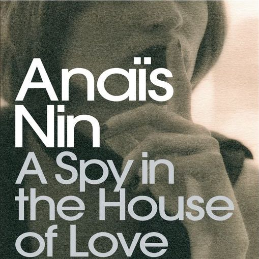

Ginny Wan
Philosophy Student at University College London
A wanderer between nihilism and existentialism, an avid art lover, an insatiable globetrotter, and a hunter for beauty in nature and life.
LinkA Selection Of My Favorite Novels
The Unbearable Lightness of BeingArguably one of the best contemporary authors, Milan Kundera challenges the boundaries between literature and philosophy and philosophizes about the most mundane events in daily life. "In The Unbearable Lightness of Being, Milan Kundera tells the story of a young woman in love with a man torn between his love for her and his incorrigible womanizing and one of his mistresses and her humbly faithful lover. This magnificent novel juxtaposes geographically distant places; brilliant and playful reflections; and a variety of styles to take its place as perhaps the major achievement of one of the world’s truly great writers." |

|
Histoires de peintures"Daniel Arasse invite son lecteur à une traversée de l'histoire de la peinture sur six siècles, depuis l'invention de la perspective jusqu'à la disparition de la figure. Evoquant de grandes problématiques - la perspective, l'Annonciation, le statut du détail, les heurs et malheurs de l'anachronisme, la restauration et les conditions de visibilité et d'exposition - mais aussi des peintres ou des tableaux précis, il fait revivre avec perspicacité et ferveur plusieurs moments clés, comme Léonard de Vinci, Michel-Ange, le maniérisme, ou encore Vermeer, Ingres, Manet." |
|  |
A Spy In the House of LoveAnais Nin's writings tantalize readers' senses, literally. "Beautiful, bored and bourgeoise, Sabina leads a double life inspired by her relentless desire for brief encounters with near-strangers. Fired into faithlessness by a desperate longing for sexual fulfilment, she weaves a sensual web of deceit across New York. But when the secrecy of her affairs becomes too much to bear, Sabina makes a late night phone-call to a stranger from a bar, and begins a confession that captivates the unknown man and soon inspires him to seek her out..." |
About This Page
This page has been curated by Ginny. All Rights Reserved.